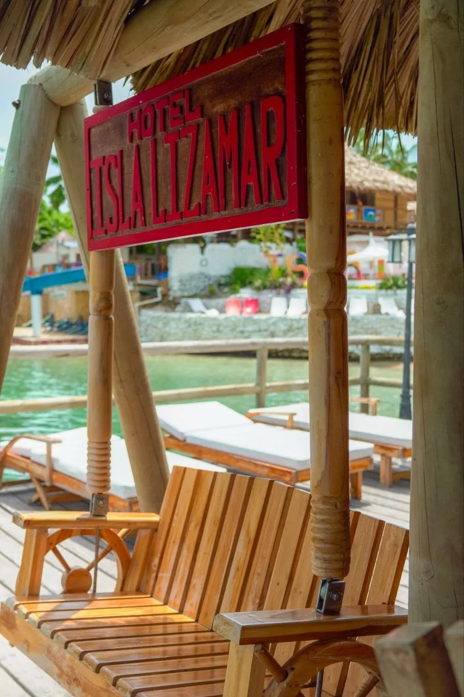

Nuevo · 2026
Nuevo · 2026Actualidad 2026
Festival Náutico de Cartagena 2026
Fechas confirmadas, recomendaciones, seguridad y cómo organizar el viaje para uno de los eventos más esperados de noviembre.
Leer guíaConsejos expertos, guías de destinos y secretos de las Islas del Rosario.
Nuevo · 2026Fechas confirmadas, recomendaciones, seguridad y cómo organizar el viaje para uno de los eventos más esperados de noviembre.
Leer guía Nuevo · 2026
Nuevo · 2026Preludios, Gran Desfile, Festival Náutico, Cabildo de Getsemaní y coronación: organiza tus fechas con el calendario oficial.
Leer guía Nuevo · 2026
Nuevo · 2026Horario general, franja recomendada por salvavidas y cierres temporales: lo que debes confirmar antes de ir al mar.
Leer guía Nuevo · 2026
Nuevo · 2026Rotaciones, horarios normales y temporadas de restricción especial para que tu carro alquilado no arruine el itinerario.
Leer guía Nuevo · 2026
Nuevo · 2026Lluvia, equipaje, eventos y planes alternativos: una guía honesta para aprovechar noviembre sin depender de un pronóstico perfecto.
Leer guía.webp) Nuevo · 2026
Nuevo · 2026Operador, muelle, chaleco, capacidad, clima y regreso: revisa estas señales antes de subir a una lancha en Cartagena.
Leer guía Nuevo · 2026
Nuevo · 2026Luces, mercadito, novenas, Festival del Pastel y mar Caribe: organiza diciembre con la agenda anunciada para 2026.
Leer guía Nuevo · 2026
Nuevo · 2026Del 17 al 26 de diciembre: conoce este símbolo de la cocina navideña cartagenera y cómo aprovechar la visita.
Leer guía Nuevo · 2026
Nuevo · 2026Lluvia, oleaje y restricciones no son lo mismo. Aprende cuándo puede salir una lancha y qué preguntar antes de pagar.
Leer guía Nuevo · 2026
Nuevo · 2026Preludios, Fiestas de Independencia, Festival Náutico, Navidad y gastronomía: el calendario para elegir tu mejor semana.
Leer guía Nuevo · 2026
Nuevo · 2026Cuánto cuestan los pasadías, qué incluye cada rango y qué cargos debes confirmar antes de reservar.
Leer guía Nuevo · 2026
Nuevo · 2026Desde marzo de 2026 es requisito de ingreso. Te explicamos qué comprobar y por qué no es lo mismo que la entrada al parque.
Leer guía Nuevo · 2026
Nuevo · 2026Paso a paso para comprobar quién te vende el tour, si su registro está vigente y qué otras evidencias debes guardar.
Leer guíaNuevo · 2026Cómo acordar el precio, qué pruebas guardar y cuáles son los canales oficiales ante un cobro irregular.
Leer guía Nuevo · 2026
Nuevo · 2026Chaleco, cupo, muelle autorizado, motores e identificación: la lista que debes revisar antes de zarpar.
Leer guía
Nueva guía 2026Documentos oficiales, plan de cuatro días, precios en pesos colombianos y cómo reservar antes de volar.
Leer guía.jpg) Precios actualizados
Precios actualizados
Compara 5 Islas, pasadías, buceo y Totumo; identifica tasas y extras antes de pagar.
Comparar precios
Guía Esencial
El problema número uno del turista en Cartagena no es un robo a mano armada: es una mala tasa de cambio. Aprende a evitarlo.
Leer Artículo.webp) Guía Esencial
Guía Esencial
La diferencia entre ver una ciudad y vivirla está en quién camina a tu lado. Así es viajar con tu Acompañante Nohemi.
Leer Artículo
Cuando el sol baja, la ciudad amurallada se viste de oro. Así es navegar la bahía al atardecer, acompañado por Nohemi.
Leer Artículo
Los sabores que narran historias de resistencia, identidad y comunidad en el Caribe colombiano.
Leer Artículo.webp)
Una guía de los restaurantes isleños a los que solo puedes llegar en bote.
Leer Artículo.webp)
Descubre el origen del nombre de nuestro Corralito de Piedra antes de 1533.
Leer Artículo
Descubre los lugares más exclusivos para fondear tu bote, lejos de las multitudes.
Leer Artículo
Descubre por qué planificar con anticipación es la clave para una experiencia segura y memorable.
Leer Artículo.webp)
No te dejes engañar. Aprende a verificar que tu bote cumpla con todas las normas.
Leer Artículo Deportes Acuáticos
Deportes Acuáticos
Los mejores spots, temporadas de viento, niveles de cursos y precios. Todo lo que necesitas para volar en el Caribe colombiano.
Leer Artículo Guías de Viaje
Guías de Viaje
Desde el Castillo de San Felipe hasta el kitesurf y los comedores de palafito. Los mejores planes según una cartagenera de nacimiento.
Leer Artículo Presupuesto
Presupuesto
Vuelos, alojamiento, comida, tours y transporte. La guía de presupuesto más completa y honesta para planificar tu viaje.
Leer Artículo
Islas y Playas
Bocagrande, Playa Blanca, Islas del Rosario, La Boquilla y Manzanillo del Mar. Cuál elegir según lo que buscas.
Leer Artículo Viajes en Familia
Viajes en Familia
El Acuario del Rosario, paseos en lancha, playas seguras y plan de 3 días perfecto para familias. Todo lo que necesitas saber.
Leer Artículo
Guías de Viaje
Comparamos precios, playas, cultura, vida nocturna y seguridad entre Cartagena y Cancún para ayudarte a decidir tu próximo destino.
Leer Artículo.webp) Guías de Viaje
Guías de Viaje
Vuelos directos, requisitos de entrada, dinero, idioma, seguridad y las mejores experiencias para tu primer viaje desde EE.UU.
Leer Artículo
Guías de Viaje
Itinerarios según tus horas en puerto, cómo llegar al Centro Histórico y consejos para volver a tiempo a tu barco.
Leer Artículo Guías de Viaje
Guías de Viaje
Comparamos los barrios más populares para hospedarte según tu presupuesto, estilo de viaje y lo que quieres hacer.
Leer Artículo.webp) Guías de Viaje
Guías de Viaje
Pasaporte, visa, Check-Mig, vacunas y aduana: todo lo que necesitas saber antes de tu viaje a Cartagena.
Leer Artículo Guía de Viaje
Guía de Viaje
Temporada seca, temporada de lluvias, clima, fechas de alta demanda y cuándo aprovechar el mejor viento para kitesurf.
Leer Artículo Guía de Viaje · Low Cost
Guía de Viaje · Low Cost
Buceo, kayak en manglares, pueblo de Orika y bioluminiscencia nocturna. Guía completa con precios desde ~670.000 COP/persona.
Leer Artículo.webp) Guía de Viaje
Guía de Viaje
Centro Histórico y Getsemaní, Islas del Rosario en bote y La Boquilla con playa y kitesurf: tu plan completo.
Leer Artículo.webp) Guía de Viaje
Guía de Viaje
Taxi oficial, transporte privado o apps: opciones, precios y tiempos para llegar seguro desde el Aeropuerto Rafael Núñez.
Leer Artículo Deportes Acuáticos
Deportes Acuáticos
Comparamos equipo, curva de aprendizaje, viento necesario y costos para ayudarte a elegir tu próxima aventura.
Leer Artículo.webp) Guías de Viaje
Guías de Viaje
Taxis, InDriver, mototaxis o carros de caballo. Aprende cuál usar en cada situación para moverte como un local sin pagar de más.
Leer Artículo Gastronomía
Gastronomía
Sin trampas turísticas. Dónde comer bien en el Centro Histórico, Getsemaní y Bocagrande, qué pedir y cuánto pagar realmente.
Leer Artículo Experiencias
Experiencias
Desde la bahía en bote hasta las murallas y el Castillo San Felipe. Los cinco lugares donde el atardecer de Cartagena es simplemente otro nivel.
Leer Artículo
Guías de Viaje
Mochilas wayuu, cerámicas, sombreros vueltiao y más. Guía honesta de qué vale la pena, dónde comprarlo y cómo no pagar de más.
Leer Artículo Vida Nocturna
Vida Nocturna
Chivas rumberas, plazas del Centro Histórico, Getsemaní de noche y los mejores bares. La noche en Cartagena empieza tarde y vale cada minuto.
Leer Artículo Aventura
Aventura
Precios, zona de aterrizaje, restricciones de peso y qué esperar en 60 segundos de caída libre sobre el Mar Caribe colombiano.
Leer Artículo Aventura
Aventura
El único zipline con vistas al Mar Caribe: 5 cables, qué incluye, duración, precios y por qué es una de las actividades más originales de la costa norte.
Leer Artículo Aventura · Top TripAdvisor
Aventura · Top TripAdvisor
Playa, montañas y senderos en 2.5 horas. Por qué este ATV tour es top-rated en TripAdvisor y qué lo hace diferente a todo lo demás en Cartagena.
Leer ArtículoDéjanos tu correo y te avisaremos por WhatsApp sobre promociones, descuentos de temporada y nuevas experiencias en Cartagena.